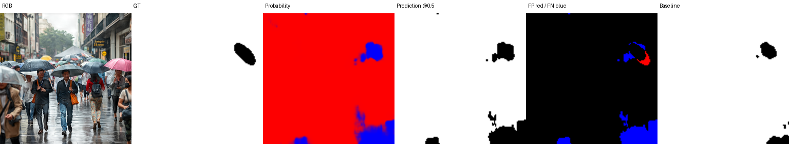

A watermark can cover most of an image and still contain small clean holes.
We predict both regions on a 128 × 128 grid.

Input image
Ground truth
Earlier model prediction
The final recipe combines shared edit localization with PixelSeal-specific features.
Two models predict partial watermark regions and clean holes.
Keep the selected TrustMark and StegaStamp outputs frozen.
Refine the decoder with feature CutMix.
Blend 70% ensemble probability with 30% specialist output.
Rank pixel probabilities and choose a region size
using an expected-mIoU approximation.
1,020 accepted masks replay exactly.
Final weights and cached ensemble inputs accompany the code.
PixelSeal · reused 57-image development fold
Paired delta +0.0016
95% interval [−0.0032, +0.0071]
The local interval includes zero; the promotion gate failed. The public recipe also changes other-family masks, so the public gain is not an isolated effect of this edit.
Group 33 anonymous endpoints by family and exact model identity.
| What changed? | Same model? | Evidence we need |
|---|---|---|
| System prompt, sampling, watermark | Yes | Recognize the behavioral disguise |
| Quantization or LoRA adapter | No | Detect a change in the weights |
Repeated openings, vocabulary variation, digit skew
and custom-prompt evidence flag changed behavior.
Measure how well base, adapter and quantized copies
explain the saved endpoint responses.
Prioritize adapter and quantization evidence.
Then group disguises and resolve plain-base candidates.
The submitted solution includes manual family/tag assignments and an ep-26 exception informed by public feedback.
33 / 33 endpoint labels reconstructed
from the frozen evidence.
| Practice | 1.0000 |
| Local test bed | 0.4876 |
Local scores use known families and reused development data. The perfect public score does not establish hidden-pair correctness.
Replay checks CSV partitions and the accepted upload hash without new API queries.
We receive a trained ViT-B/16 and 3,500 unlabeled forget images.
Retain data and retrained gold models stay hidden.
Reduce confidence by a controlled amount for each image, using its robustness under altered views.
Keep teacher outputs and CLS features stable on strong transformed and mixed views.
The evaluator also requires at least 70% hidden validation accuracy.
Local teacher agreement cannot verify that gate.
Keep the teacher’s relative probabilities over the other classes.
Lower the target by one additional logit for altered forget views.
Distillation at two temperatures and direct log-odds matching.
Teacher-output loss, weight 5.
Normalized CLS-feature loss, weight 10.
E30: 0.3013 · E43: 0.3055 · E50: 0.3149
CLS-feature weights: 0.5, 2 and 10.
Strict architecture load and finite FP32 weights.
Finite server-style FP16 output on 256 real images.
Receipt and validation record share the same checkpoint hash.
The exact checkpoint accompanies the source
as a release asset, with a verified hash.